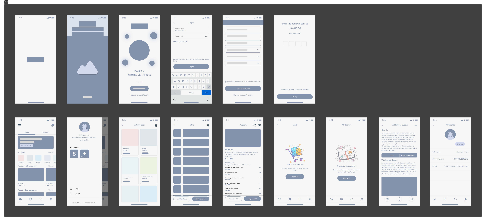
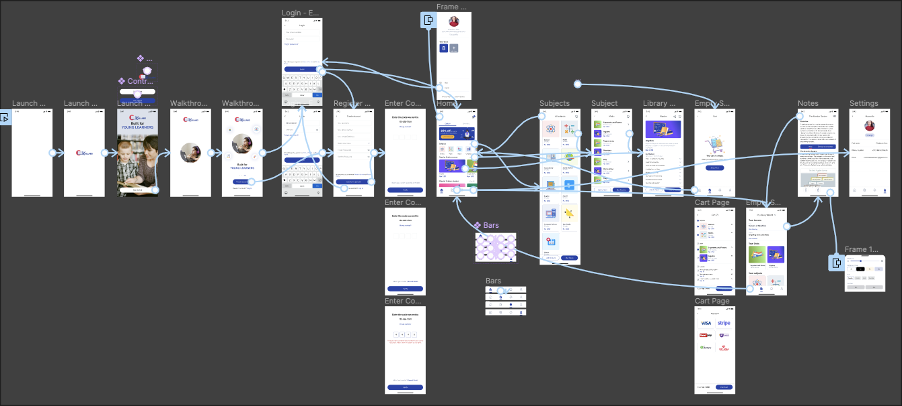

Flow Chart
Flow Chart

Kullabs is an educational platform offering quality notes, study materials, videos, and games for middle school, high school, college students, and young learners, aiming to simplify education.
Design challenges encompassed sustaining user engagement, catering to diverse age groups, organizing content intuitively, and creating valuable interactive learning materials across devices.
The primary objective was to create an intuitive, accessible platform facilitating seamless navigation through educational resources for diverse user groups.
Implemented user-centric design with thorough research, structured information architecture, responsive design principles, and engaging educational materials to enhance user experience and address platform challenges.
Flow Chart
I quickly mocked up some basic wireframes to gather feedback from Product, Engineering and the users on the overall layout and structure of the wizard form. This involved establishing a standardised visual hierarchy and layout for the future wizard component.
To address these needs, I initiated the prototyping phase by translating wireframes into interactive prototypes. These prototypes allowed for real-time user testing and feedback collection, enabling Product and Engineering teams to visualize the user flow and functionality. By creating a consistent design language and interactive experience, these prototypes served as a blueprint for future iterations and design enhancements.
Prior to launch, I focused on refining the design elements based on user feedback and usability testing results. This involved fine-tuning visual aesthetics, typography, and color palettes to create a polished user interface. Ensuring responsiveness across various devices was a priority, allowing for a consistent and seamless user experience. Additionally, I documented comprehensive design guidelines and specifications to maintain consistency in design elements and interactions post-launch.

The approach involved iterative steps, starting from wireframing, moving to prototyping, and culminating in the final design before launch. This iterative method allowed for continuous refinement based on feedback.
Throughout the wireframing, prototyping, and final design stages, the focus remained on addressing user needs and pain points. User feedback and testing were integral to each phase, ensuring the end product catered effectively to user requirements.
Collaboration with cross-functional teams such as Product and Engineering facilitated the gathering of diverse perspectives. It allowed for the incorporation of valuable feedback into each design iteration.
Establishing standardized design patterns and components was crucial for scalability. This ensured consistency in the user experience and provided a clear design framework for future iterations or components.
Usability testing and responsive design principles were prioritized to create an intuitive and seamless experience across different devices. Adapting the design to varying screen sizes and functionalities was key to ensuring broad accessibility.
Creating comprehensive design guidelines and specifications provided a reference for consistency post-launch. This documentation served as a guide for maintaining design coherence in future updates or expansions.